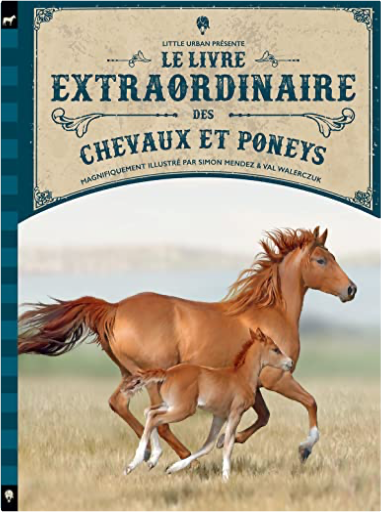
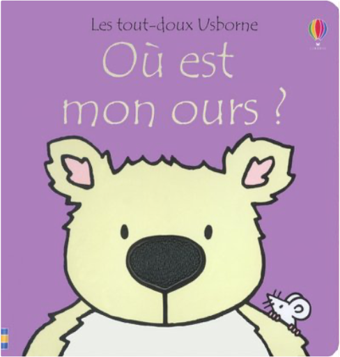

Books
Movies
Albums
Videogames
Games
BD
BD Camille
Blu-ray
Business
Camille
Comics
Cooking
Lego
Manga
Pauline
Photography
Star Wars
T'choupi
Travel
TV Shows
Un livre dont vous êtes le héro
Vinyl
Walt Disney
13
14
15
16
17
l'incroyable aventure de pierre lapin
emma thompson
contes et comptines à toucher - la petite poule rousse
leo timmers

le Livre extraordinaire des chevaux
Jackson Tom, Ferguson Diana
fantastique corps humain
emmanuel trédez
princesse henriette, tome 2 : le bal des 12 souris
ursula vernon
galops 1 et 2
vigot
les cinq, tome 26 - et les pirates du ciel
claude voilier
les cinq, tome 27 - contre le masque noir
claude voilier
mes p'tits - sa majesté léonardo n'en fait qu'à sa tpete
yann walcker
mes p'tits album - chouquette et les secrets magiques
yann walcker
où est mon lapin ?
fiona watt

où est mon ours ?
fiona watt
13
14
15
16
17


 Made with Delicious Library Made with Delicious Library
Made with Delicious Library Made with Delicious Library